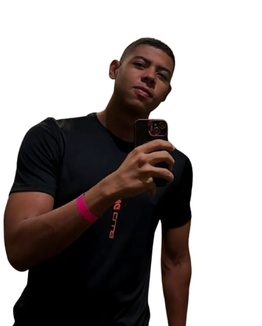

Nome: André Luiz Ferreira Lauriano da Silva
Idade: 18 anos
Brasileiro
Estado Civil: Solteiro
Ensino Médio | Completo
Escola Estadual Uberlândia
Fazendo graduação em Sistemas para Internet | Primeiro período
Inglês básico (213 horas) - CNI Informática
Gerencial (213 horas) - CNI
Administração ( 1 ano e 3 meses) – CDL
Secretariado (8 horas) - CEBRAC
Web Designer (8 horas) – CEBRAC
Auxiliar de Logística – Frigelar comercio e indústria ltda ( 1 ano e 4 meses).
Gosto bastante de futebol e acompanho sempre que posso. É um esporte que me diverte e faz parte do meu dia a dia. Tenho uma simpatia especial pelo Cruzeiro, time que acompanho com carinho.
Cruzeiro
Gosto de treinar e manter uma rotina de academia. É um momento importante para cuidar da saúde e também para aliviar o estresse do dia a dia.
Academia
Gosto de leitura e procuro sempre reservar um tempo para isso. É uma forma de aprender coisas novas e também de relaxar no dia a dia com novas historias.
Leitura